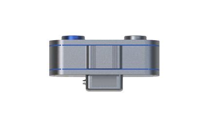
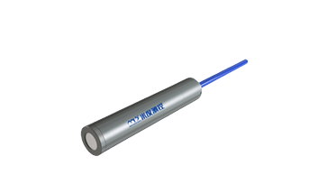
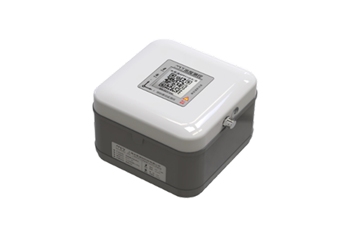

Radar Sensor
DR030 Water Level Sensor
A professional-grade integrated radar instrument engineered specifically for highly accurate mud and water level monitoring.
IoT Sensors
Advanced geotechnical and structural sensors engineered for continuous, real-time monitoring in the harshest field environments.
Intelligent geotechnical sensing suite delivering real-time tilt, vibration, pore water pressure, and displacement data for mission-critical monitoring deployments.

A professional-grade integrated radar instrument engineered specifically for highly accurate mud and water level monitoring.

Internal pore water pressure alongside synchronous temperature telemetry monitoring.

A low-power smart sensing terminal engineered specifically for monitoring landslides, rockfalls, and hazardous mass movements.

Capable of capturing soil moisture, temperature, and spatial angles.